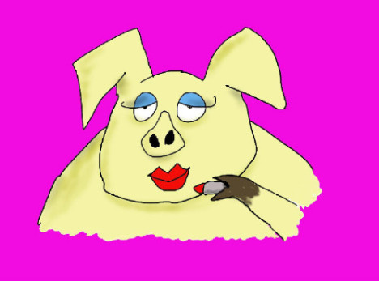
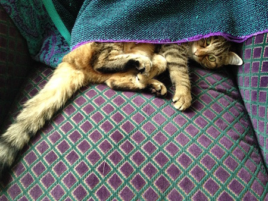

What a faker!

When we think about how much of our lives we devote to getting people to like us, well…
Read More…
BE here now
Most people involved with spirituality want things to be different.
Yeah, there, I said it.
Read More…
Don't ever die

Last summer I put my treasured kitty Muffin to sleep.
Such sadness. Such loss.
Read More…
Read More…